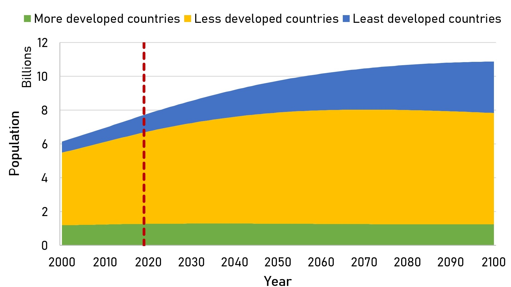
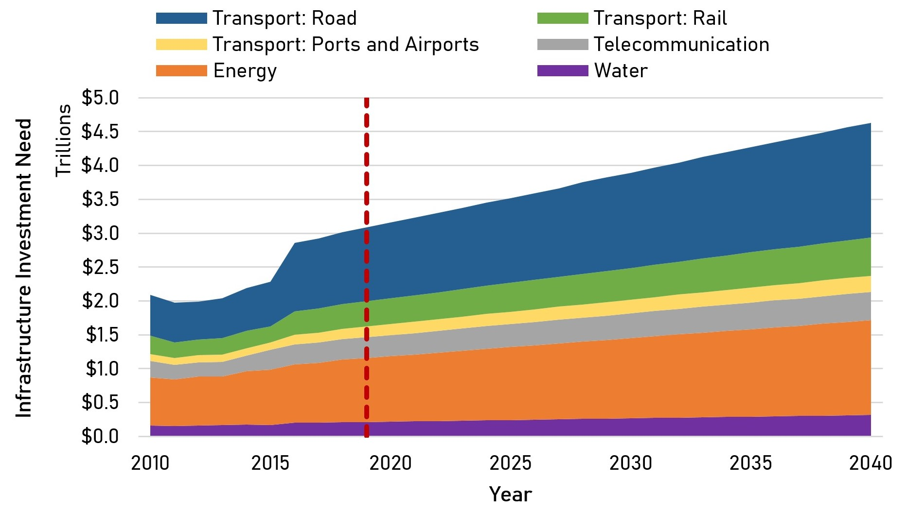
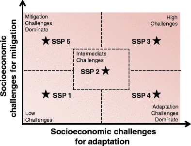
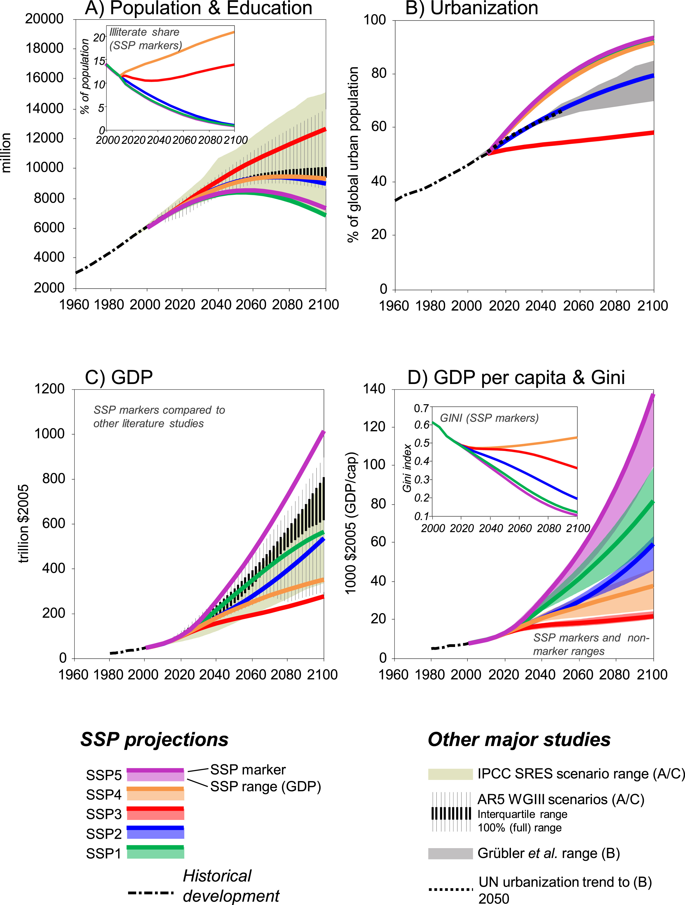

This mini-lecture provides an overview of the future uncertainty for infrastructure demand, some methods to provide forecasts using scenario analysis, and a preliminary description of common infrastructure drivers.
Demand for infrastructure is driven by complex future social, economic and technological changes, which are highly uncertain and difficult to estimate. These future trends include demographic changes, urbanisation, migration, environmental factors, institutional development, etc.
However, the need to forecast future infrastructure demand is crucial given the high cost of infrastructure investment and its long-term nature. Moreover, a lack of infrastructure is a major problem for developing countries, which will likely be exacerbated in the coming decades due to significant population growth, as shown in Figure 4.1.1.
In this lecture we will introduce some well-known methodologies to forecast investment/policy needs, usually developed for climate change adaptation and mitigation, such as the Integrated Assessment Modelling (IAM) and Shared Socio-Economic Pathways (SSPs). This first overview will help to understand how uncertainties are considered in other contexts. Then, we will explore the nature of infrastructure as long-lived assets, and why it is important not to follow a predict-then-act approach, but to predict a range of possible futures, recognising uncertainty. Finally, we will describe the main future trends in developing countries and their consequences for infrastructure demand.

Figure 4.1.1: World Population Forecast by 2100 (based on data from United Nations Department of Economic and Social Affairs (2019))
Emerging markets and developing economies will require annual infrastructure investments of around USD1 trillion, according to the World Bank (Ruiz-Nuñez and Wei 2015). Figure 4.1.2 shows a sectoral estimate for global annual infrastructure investment needs by the Global Infrastructure Outlook (Global Infrastructure Hub 2020). Electricity and roads account for more than 66% of the total investment needed by 2040. Furthermore, from 2016 to 2040, approximately USD 94 trillion (USD 3.7 trillion per year) will be needed globally.

Figure 4.1.2: Growing annual infrastructure investment requirements by sector (based on data from Global Infrastructure Hub (2020))
Moreover, the high costs associated with infrastructure and the limited public budget of developing countries increases the importance of appropriate infrastructure projections and decision-making processes to prevent locking countries in unsustainable and irreversible development patterns. This shows the huge infrastructure challenge that the developing world needs to tackle over the next decades.
Infrastructure lasts for decades so the decisions made in the present need to recognise the future demand. The nature of these long-term trends is uncertain and hard to predict (Thoung et al. 2016). Therefore, a predict-then-act approach is not recommended for these long-lived assets, but rather to predict a range of possible futures in recognition of this uncertainty.
During the last decades, there was an important body of literature on scenario analysis, as a means of developing possible futures and asking “what if” questions to explore how the uncertainty might unfold. With this view, a scenario is defined as an internally consistent view of what the future might turn out to be—not a forecast, but one possible future outcome (Porter 1985).
One method crafted with the intention of including societal, environmental and economic uncertainty/complexity is the IAM approach, which has been used to inform policymaking in the context of climate change (Beek et al. 2020). Another important concept are the SSPs, which project global scenarios of socio-economic change to the end of the century with the intention of characterising uncertainty in mitigation, adaptation and impacts of climate change. In this framework, socio-economic and environmental challenges are classified as pertaining to adaptation or mitigation, as shown in Figure 4.1.2. This way of characterising uncertainty and its implications of mitigation or adaptation, enables the exploration of future socio-economic pathways that make these processes harder or easier (O’Neill et al. 2014).
The concepts explored in this lecture highlight the exploratory nature of this forecasting exercise (presenting multiple future scenarios) as opposed to normative scenarios (building toward one vision of the future).

Figure 4.1.3: The challenge space of SSPs (O’Neill et al. 2014)
SSPs can be differentiated from each other in terms of their challenges of mitigation and adaptation. The models that inform SSPs include, at a minimum, assumptions of future demographics, economic development and a degree of global integration (O’Neill et al. 2014). Furthermore, these models incorporate information that allows the development of regional or local scenarios.
Commonly, five SSP narratives are used and are summarised as follows (O’Neill et al. 2017):
SSP1: Sustainability – Taking the Green Road, in which the world shifts gradually toward a more sustainable path. This scenario has low challenges to mitigation and adaptation.
SSP2: Middle of the Road in which historical trends in social, economic and technological changes continue. This scenario has medium challenges to mitigation and adaptation.
SSP3: Regional Rivalry – A Rocky Road, in which nationalism and regional conflicts push countries to focus on their own goals and needs. This scenario has high challenges to mitigation and adaptation.
SSP4: Inequality – A Road Divided, in which there are high inequalities and technological disparities between different regions. This scenario has low challenges to mitigation and high challenges to adaptation.
SSP5: Fossil-fuelled Development – Taking the Highway, in which there is rapid technological progress and growth by exploitation of natural resources. This scenario has high challenges to mitigation and low challenges to adaptation.
Therefore, we can see how different socio-economic and technological projections can help us navigate the uncertain future.
When confronting with the difficult task of forecasting infrastructure demand, there are many drivers that may have a potential impact on the future. Some of the most important drivers that can influence infrastructure demand are described as follows:
Population growth, is the most common driver of infrastructure demand. There are many global, regional and local population forecasts and the proportional growth of population and demand is easy to compute.
Economic Development, can modify future demand given that there is a close relationship between economic development and level of consumption. On the other hand, infrastructure can produce economic development as well.
Consumption patterns, are related to economic development but are also influenced by changes in culture or behaviour. For example, an increase in recycling and efficient use of energy and water will shape the future demand of infrastructure.
Technology, is usually related to the supply side (new ways of production) but can also influence demand (efficiency, new transportation modes).
Urbanisation, migration and tourism, are of particular importance in developing countries in which an important increase of rural-to-urban migration is expected.
Demographics (age and gender), can influence consumption patterns and shape the overall demand for infrastructure.
Figure 4.1.4 shows the forecasting of individual infrastructure drivers using the SSP scenarios. Here, the large differences in the different narratives in terms of population, education, urbanisation and GDP are evident.

Figure 4.1.4: Forecasting of different drivers under the SSPs (Riahi et al. 2017)
In this mini-lecture, the complexity that the future poses on infrastructure was described. This mini-lecture explains the concept of Shared Socio-economic Pathways (SSPs) as a tool to project global scenarios. This concept is also used to introduce some basic ideas about infrastructure demands and drivers.